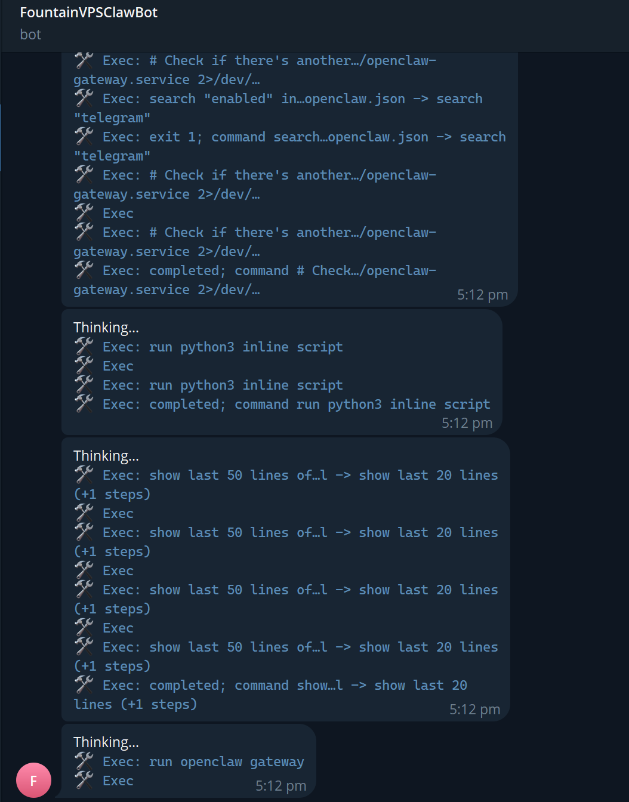

Back to projects
OpenClaw showcase
OpenClaw VPS Bot
A 24/7 autonomous OpenClaw workflow with cron jobs for VPS checks, service inspection, backups, audits, and command traces surfaced through Telegram.
No repository is attached publicly for security reasons. The workflow touches VPS automation, cron schedules, and operational OpenClaw details that should not be exposed.
OpenClaw
Telegram
VPS
Automation
Exec: check OpenClaw gateway service
Search config for Telegram integration
Cron jobs keep audits and backups running autonomously
Show latest logs and complete command traces
Real Telegram run
OpenClaw execution visible in chat.
The screenshot shows the bot streaming command steps from a VPS-oriented OpenClaw workflow. The wider setup runs continuously with cron jobs for audits, backups, and automation loops.
- Command traces are surfaced in Telegram instead of hidden in server logs.
- Cron jobs keep the system running 24/7 without manual triggering.
- Workflow is oriented around VPS service inspection, audits, backups, and automation.
- Source code is intentionally withheld because exposing it would leak operational patterns.
